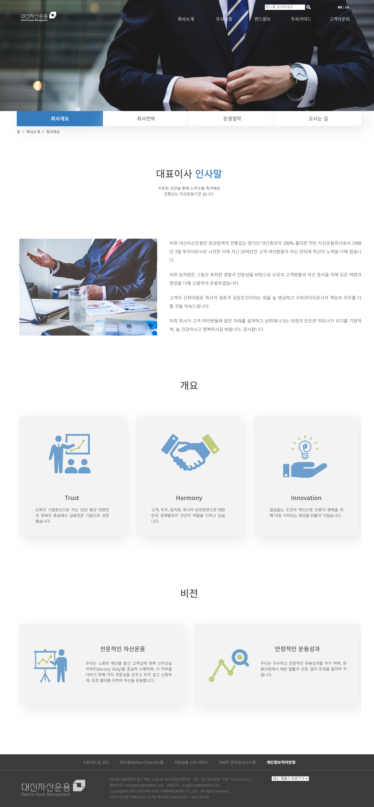
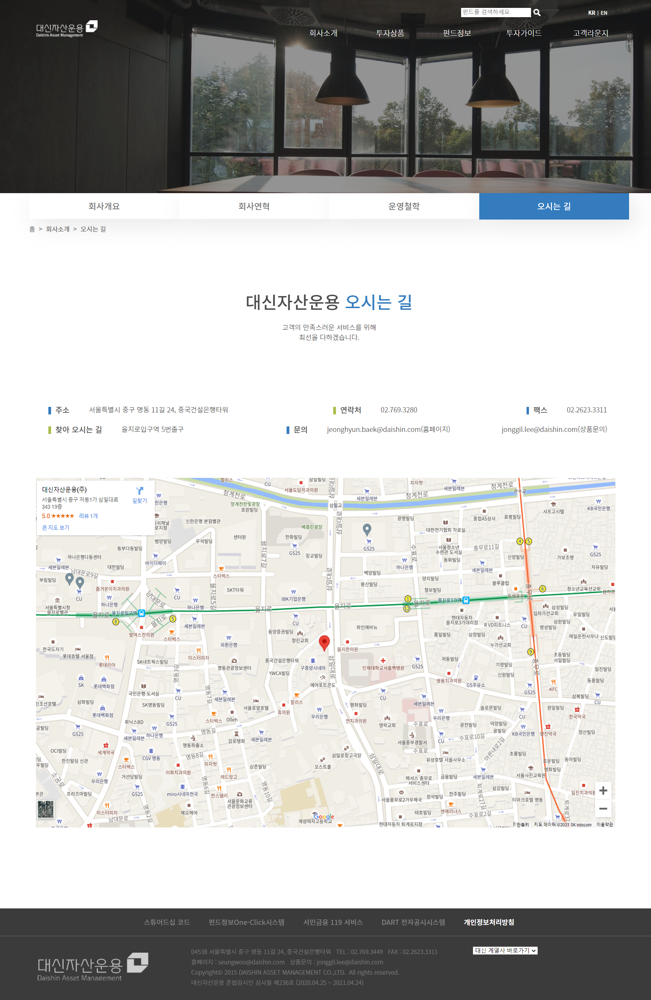
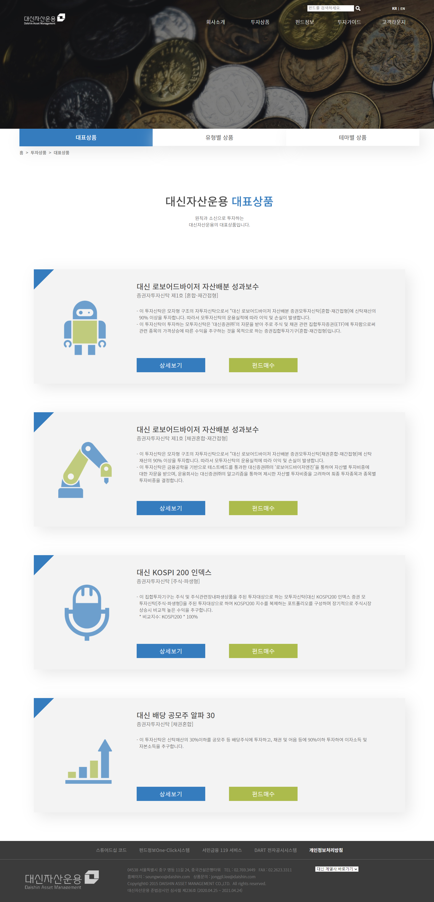

대신자산운용 홈페이지 리뉴얼
URL https://daishin.netlify.app
제작 소요기간 약 2주
참여도 팀프로젝트
제작페이지 index, sub1_1, sub1_4, sub2_1
내용
- 자산운용은 복잡하고 어렵다는 기존의 인식을 벗기 위해 내용과 기능에 집중
- 신뢰를 줄 수 있는 디자인을 선택
- 우선순위에 따른 재배치로 정보전달력을 증가시킴
- COLOR : #357cbe, #acbb4c
- 서체 : Noto Sans KR(Bold - Medium - Regular -Light - Thin)



